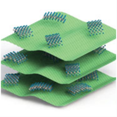
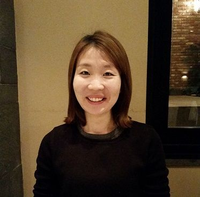
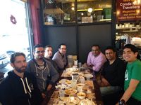
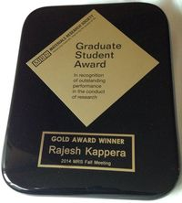
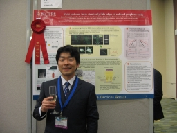

2015
November 1, 2015
We have three new undergraduate students. Michaela Csorny from Electrical & Computer Engineering; Kerem Sahiner from Materials Science & Engineering; and Shyama Shah from Biomedical Engineering. Welcome Michaela, Kerem and Shyama!!
October 20, 2015
Congratulations to Jacob Kupferberg, one of our undergraduate researchers, who has been awarded an Aresty Undergraduate Research Fellowhip for the 2015-2016 academic year.
September 8, 2015
We have two new visiting undergraduate students from Jilin University: Yang Song and Claire Quanchoa Du. Welcome to our group, Yang and Claire!!
August 4, 2015
Our review paper entitled "Phase-engineered transition-metal dichalcogenides for energy and electronics" has been accepted for publication in the July edition of the MRS Bulletin dedicated to 2D Latered Transition-Metal Dichalcogenides. [pdf]
July 30, 2015
The MRS Webinar has been rescheduled due to technical difficulties. It will take place on August 5, 2015. [link]
July 20, 2015
Professor Manish Chhowalla will have a featured talk in a free Webinar Series on MRS On Demand. The webinar will take place on Wednesday, July 22 from 12:00pm - 1:30pm (ET). It is titled "2D Transition Metal Dichalcogenides" and Professor Chhowalla's talk is titled "Phase Engnieering in 2D Transition Metal Dichalcogenides" [link]
June 1, 2015
Congratulations to our undegraduate researchers that graduated this Spring! Have a great summer from the Nano-Materials and Devices Group.
May 5, 2015
Professor Manish Chhowalla was recently a guest editor on a themed issue of Chemical Society Reviews titled "2D Transition Metal Dichalcogenide (TMD) Nanosheets" and is featured in an editorial article titled "Two-Dimensional transition metal dichalcogenide (TMD) nanosheets" (Chhowalla, M. et al. Chem. Soc. Rev. 2015).
April 20, 2015
Congratulations to Damien Voiry for his first-authored review paper published in Chemical Society Reviews! The review paper is titled "Phase Engineering of transition metal dichalcogenides" (Voiry, D. et al. Chem. Soc. Rev. 2015).
April 3, 2015
We have a new group member and post-doctoral associate: Dr. Jieun Yang from South Korea. Jieun joins our group from Ulsan National Institute of Science and Technology (UNIST). Welcome to our group, Jieun!!
April 1, 2015
Congratulations to Muharrem Acerce for his first-authored paper published in Nature Nanotechnology! The paper is titled " 1T phase MoS2 nanosheets as supercapacitor electrode materials" (Acerce, M. et al. Nature Nanotechnology, 2015).
February 27, 2015
Congratulations to Daniel Kondracki, Calvin Lee, and Dustin Ng for winning Aresty Undergraduate Fellowships in the 2014-2015 academic year. Daniel will be working on new passivation routes for MoS2; Calvin will be working on the synthesis and application of new layered materials; Dustin will be working on supercapacitive applications of TMD materials.
February 2nd, 2015
We have a new visiting student: Geetika Khurana from the University of Puerto Rico. Welcome to our group, Geetika!!
2014 December 22nd, 2014
Congratulations to Dr. Rajesh Kappera for successfully defending his Ph.D. thesis, "Electronic Properties and Phase Engineering of 2-Dimensional MoS2, and earning his Ph.D. in Electrical Engineering. The committee members include: Prof. Manish Chhowalla*, Prof. Yicheng Lu, Prof. Michael Caggiano, Prof. Wei Jiang, and Dr. Aditya Mohite.
December 5th, 2014
Congratulations to Rajesh Kappera for winning the Graduate Student Gold Award at MRS Fall 2014. He presented his recent work "High Performance Transistors from Ultra-Thin MoS2 by Phase Engineered Low Resistance Contacts"
December 2nd, 2014
Rajesh's poster was nominated for the best poster award among 900 posters presented at MRS Fall 2014. The poster was entitled "High Performance MoS2 Transistors with Phase Engineered Low Resistance Contacts" and was presented in Symposium J: Emerging Non graphene 2D Atomic layers and van der Waals Solids.
December, 2014
Our article published in Nature Materials has been featured in News and Views in the December issue of Nature Materials - a review by Profs. Debdeep Jena, Kaustav Banerjee & Grace Huili Xing - "2D crystal semiconductors: Intimate contacts" (News and Views, Nature Materials, 2014).
November 18, 2014
Our group will be featured in an upcoming MRS TV video that will be shown during the MRS Fall 2014 meeting in Boston, MA.
November 13th, 2014
Congratulations to Damien Voiry for his first-authored paper to be published in Nature Chemistry (Voiry, D. et al. Nature Chemistry, 2014).
October 21st, 2014
Congratulations to Rajesh Kappera for being selected as a finalist for the Graduate Student Award in the MRS Fall 2014 Meeting. Rajesh will present his work during the Special Talk Session of the conference.
October 16th, 2014
Congratulations to Rajesh Kappera for his first-authored paper to be published in APL Materials
(Kappera, R. et al. APL Mater., 2014).
September 12th, 2014
Our paper entitled "Phase-engineered low-resistance contacts for ultrathin MoS2 transistors"
(Kappera, R. et al. Nature Materials, 2014) has been featured in nanotechweb.org, phys.org and arstechnica.com.
September 3rd, 2014
Congratulations to Rajesh Kappera for his first-authored paper to be published in Nature Materials
(Kappera, R. et al. Nature Materials, 2014).
February 22th, 2014
We have a new visiting student: Yan (Gloria) Gui from Shanghai University, China. Welcome to our group, Yan!!
2013
December 14th, 2013
Our paper entitled "Conducting MoS2 Nanosheets as Catalysts for Hydrogen Evolution Reaction"
(Voiry, D. et al. Nano Lett., 2013) was one of the most read articles of Nano Letters in December 2013!
November 23rd, 2013
Congratulations to Dr. Damien Voiry for for his first-authored paper to be published in Nano Letters
(Voiry, D. et al. Nano Lett., 2013).
November 11th, 2013
Congratulations to Jieun Yang and Dr. Damien Voiry for their equal contribution paper to be published in Angew. Chem. Int. Ed. (Yang, J. et al. Angew. Chem. Int. Ed., 2013). Jieun Yang was a visiting PhD student in our group in summer 2012.
October 25th, 2013
Congratulations to Daniel Kondracki and Dustin Ng for being awarded the Aresty Undergraduate Research Fellowships! Dustin and Daniel will work on 2D materials for energy-related applications.
October 12th, 2013
Congratulations to Dr. Hisato Yamaguchi for his first-authored paper to be published in Advanced Energy Materials (Yamaguchi, H.. et al. Adv. Energy Mater., 2013). Dr. Hisato Yamaguchi is now a Director's Postdoctoral Fellow at Los Alamos National Laboratory (LANL).
August 16th, 2013
We have a new group member Raymond Fullon from University of Texas at Austin. Welcome to our group, Raymond!!
August 3rd, 2013
Our paper entitled "Enhanced catalytic activity in strained chemically exfoliated WS2 nanosheets for hydrogen evolution" (Voiry, D. et al. Nature Materials, 2013) has been featured in nanotechweb.org.
July 8th, 2013
Congratulations to Dr. Damien Voiry for his first-authored paper to be published in Nature Materials
(Voiry, D. et al. Nature Materials, 2013).
July 3rd, 2013
Our review paper entitled "Liquid exfoliation of layered materials" has been accepted for publication in Science (Nicolosi, V. et al. Science, 2013).
June 30th, 2013
Congratulations to George Bepete for his first-authored paper to be published in Nanoscale
(Bepete, G. et al. Nanoscale, 2013). George was a visiting student under the IGERT program.
May 2013
Congratulations to Dr. Damien Voiry for his co-authored paper to be published in the Journal of the American Chemical Society (Silva, R. et al. Jacs, 2013).
April 2013
Our review paper entitled "The chemistry of two-dimensional layered transition metal dichalcogenide nanosheets" has been accepted for publication in Nature Chemistry (Chhowalla, M. et al. Nature Chem., 2013).
January 2013
We have a new group member Cecilia De Carvalho Castro E Silva from University of Campinas (Unicamp), Brazil. Welcome to our group, Cecilia!!
2012
May 2012
Congratulations to Dr. Hisato Yamaguchi for being awarded prestigious and competitive Director's Postdoctoral Fellowship at Los Alamos National Laboratory (LANL). Hisato, and six other fellows from around the nation, was selected from more than few hundred candidates that reflect a broad range of disciplines in science and engineering. Hisato will collaborate with LANL scientists and engineers on fundamental and applied research on graphene and other two-dimensional nano-materials at The Center of Integrated Nanotechnologies (CINT).
May 2012
Graduate student Maryam Salehi is visiting National University of Singapore to work with Prof. Goki Eda over the summer. As a visiting student, she will be working on synthesis and characterization of layered nano-materials.
May 2012
Undergraduate student Sarah Snyder was given a chance to work at Imperial College London over the summer. With Dr. Cecilia Mattevi, she will work on layered nano-materials. How exciting!
Spring, 2012
Congratulations to Juliet Defino for successfully defending her Masters Thesis on characterization of graphene grown via chemical vapor deposition.
March 2012
Congratulations to Dr. Hisato Yamaguchi for being selected as one of 10 Japanese representatives to participate 62nd Lindau Nobel Laureate Meeting dedicated to Physics (http://www.lindau-nobel.org/), which will be held in Lindau, Germany between July 1-6, 2012. This prestigious meeting is designed for talented young researchers from all over the world to meet and discuss with over 30 Nobel Laureates who are invited to the meeting. Dr. Yamaguch’s participation related expenses will be covered by Japan Society for the Promotion of Science (JSPS).
2011
December 2011
Our paper entitled "Photoluminescence from Chemically Exfoliated MoS2" was one of the most accessed articles of Nano Letters in December 2011. [pdf]
July 2011
Congratulations to HoKwon Kim for winning the team research competition at the Global School for Advanced Studies, Graphene Session hosted by CEA laboratories on the GIANT Innovation Campus, Grenoble France (GIANT: Grenoble Innovation for Advanced New Technologies). As a result, he was awarded two years of postdoctoral research in France. http://www.gsasprogram.org/
We have two new group members! George Bepete from the Centre of Excellence in Strong Materials at the University of the Witwatersrand South Africa and Rajesh Kappera from the Department of Electrical Engineering at Rutgers. Welcome to our group George and Raj!!
July 7, 2011
Congratulations to Dr. Hisato Yamaguchi for being invited to take part in the MRS/MRS-Mexico Student Poster Award Exchange Program at 2011 International Materials Research Congress (for more information) in Cancun, August 14-19, 2011. This is related to being selected as one of only 10 Poster Award winners from among the more than 1,600 posters presented at 2011 MRS Spring Meeting. As a selectee of the Exchange Program, MRS and MRS-Mexico will cover travel expenses to Cancun, accommodations, and the meeting registration fee.
July 7, 2011
Our paper entitled "Field Emission from Atomically Thin Edges of Reduced Graphene Oxide" was featured in nanotechweb.org. [pdf]
July 2011
Our paper entitled "Graphene Patchwork" was one of the most accessed articles of ACS Nano in June 2011. [pdf]
April 28, 2011
Congratulations to Dr. Hisato Yamaguchi for winning a poster award at the 2011 Spring MRS Meeting, San Francisco. His poster was titled "Field Emission from Atomically Thin Edges of Reduced Graphene Oxide" (Y10.9) in Symposium Y: Functional Two-Dimensional Layered Materials.

Spring, 2011
Congratulations to Dr. Goki Eda for winning prestigious and highly competitive Singapore NRF Fellowship. The Fellowship is open to all areas of science and technology, and outstanding young scientists and researchers of all nationalities. Selected Fellow will be provided with a research grant over five years, to support projects that exhibit high likelihood of a research breakthrough. The Fellows will be given complete independence and freedom to pursue their own research directions. They will also be free to choose the host organization which will give them the best environment, where they are given an Assistant Professor position.
Jan. 2011
We have a new group member Dr. Damien Voiry from Tours, France. Welcome to our group, Damien!!
2010
Nov. 2010
Congratulations to Dr. Goki Eda for his co-authored paper to be published in a review of Nature Chemistry
(K.P. Loh et al. Nature Chemistry (2010)).
Oct. 12, 2010
Prof. Chhowalla had one of the highest number of total citations in all of the engineering departments at Rutgers University. The survey result was featured in the recent article of THE DAILY TARGUM. See here for more details.
Oct. 5, 2010
The Nobel Prize in Physics 2010 was awarded jointly to Andre Geim and Konstantin Novoselov "for groundbreaking experiments regarding the two-dimensional material graphene" See http://nobelprize.org/nobel_prizes/physics/laureates/2010/ for more details.
Sept. 20, 2010
Congratulations to Dr. Cecilia Mattevi for her co-authored paper to be published in Nature Materials
(M.Acik et al. Nature Materials (2010)).
September, 2010
We have a new group member Juliet Defino from Illinois. Welcome to our group, Juliet!!
Autumn, 2010
Congratulations to Dr. Wojtek Tutak for winning prestigious and highly competitivethe National Research Council (NRC) Postdoctoral Fellowship. With the fellowship, Dr. Tutak will work on biocompatible materials at National Institute of Standards and Technology (NIST). Fellows receive support for two years.
August 30, 2010
Congratulations to Wojtek Tutak for successfully defending her PhD thesis on "Single Walled Carbon Nanotube Networks as Substrates for Bone Cells". The committee members include: Prof. Manish Chhowalla (Chair), Prof. Lisa C. Klein, Prof. Adrian B. Mann, Prof. Richard L. Lehman from the Materials Science and Engineering department, and Prof. Federico Sesti from Department of Physiology & Biophysics, UMDNJ-RWJMS.
August, 2010
Congratulations to Dr. Hisato Yamaguchi for winning the Postdoctoral Fellowships for Research Abroad from Japan Society for the Promotion of Science (JSPS). The JSPS Fellowships is highly competitive and rarely given to postdoctoral researchers outside of the top institutions such as Stanford, MIT, and UC Berkeley. Fellows receive support for two years.
July 19, 2010
Congratulations to Sara Reynaud for successfully defending her PhD thesis on "Fabrication and Characterization of Carbon and Boron Carbide Nanostructured Materials". The committee members include: Prof. Manish Chhowalla (Chair), Prof. Lisa C. Klein, Prof. Adrian B. Mann from the Materials Science and Engineering department, and Prof. Zafar Iqbal from NJIT.
Summer, 2010
Prof. Chhowalla has been promoted to Full Professor at Department of Materials Science and Engineering, Rutgers University. This is only three years after being promoted early to Associate Professor with tenure effective July 1, 2007.
June 6th, 2010
Congratulations to Dr. Cecilia Mattevi for her equal contribution paper to be published in Nature Chemistry
(A.Bagri et al. Nature Chemistry (2010)).
April, 2010
Congratulations to Dr. Cecilia Mattevi for winning the Imperial Junior Research Fellowships sponsored by Imperial College London.The three-year Fellowships will give world-class early-career researchers freedom to focus on research, by providing a competitive salary and laboratory support costs; there will be no teaching or administrative duties associated with the appointments.
April 2nd, 2010
Congratulations to Varun Gupta for successfully defending his PhD thesis on "Synthesis, characterization, and application of Boron carbide nanowires". The committee members include: Prof. Chhowalla (Chair), Prof. Klein, Prof. Mann from the Materials Science and Engineering department, and Prof. Fanchini.
March, 2010
Congratulations to HoKwon Kim for winning the Postgraduate Scholarship sponsored by Natural Science and Engineering Council of Canada. HoKwon will work as a PhD student at the Imperial College London.
March, 2010
Our paper entitled "Graphene and Mobile Ions: The Key to All-Plastic, Solution-Processed Light-Emitting Devices" (P.Matyba et al. ACS Nano 4 637-642 (2010)) was featured in the "In Nano" selection for February 2010, which features the top papers in each issue. The paper was the most accessed ACS Nano article in February 2010, and featured in numerous press including Economist.com. (Top 20 most accessed ACS Nano articles for last 12 months as of June 2010)
February, 2010
Our paper entitled "Highly Uniform 300 mm Wafer-Scale Deposition of Single & Multilayered Chemically Derived Graphene Thin Films" (H.Yamaguchi et al. ACS Nano 4 524-528 (2010)) was the most accessed article of ACS Nano in January 2010. The paper was featured in nanotechweb.org. (Top 10 most accessed ACS Nano articles for the first quarter of 2010)
2009
October, 2009
Our paper entitled "Blue photoluminescence from chemically derived graphene oxide"
(G.Eda et al. Adv. Mater. 22 505-509 (2010)) was one of the most accessed articles of Advanced Materials in September 2009. The paper was featured in nanotechweb.org.
September, 2009
We have a new group member Rajen Patel from Arsenal, New Jersey. Welcome to our group, Rajen!!
June 10th, 2009
Congratulations to Goki Eda for winning the Graduate Student Award at the E-MRS spring meeting in Strasbourg, France. He presented an invited talk titled "Graphene-based large-area thin films as flexible and transparent electronic materials" in session F - Advances in transparent electronics: from materials to devices.
June 4th, 2009
Congratulations to Goki Eda for successfully defending his PhD thesis titled "Solution-processed thin films for electronics from single-walled carbon nanotubes and graphene." The committee members were: Prof. Chhowalla (Chair), Prof. Birnie, Prof. Klein, Prof. Mann, and Prof. Sigel from the Materials Science and Engineering department, and Prof. Garfunkel from the Chemisty deparment at Rutgers University.
June 1st, 2009
Congratulations to Goki Eda for winning the Newton International Fellowship sponsored by The Royal Society. Goki will proceed to work as a Newton Fellow at the Imperial College London after his completion of doctoral studies.
May 1st, 2009
Our paper entitled "ZnO nanowire networks for macroelectronic devices"(Unalan et al. Appl. Phys. Lett. 94, 163501 (2009)) was featured in the Research Highlights of Nature Nanotechnology. For details, please visit: www.nature.com/nnano/reshigh/2009/0509/full/nnano.2009.120.html
April 29th, 2009
Congratulations to Goki Eda for recieving Dean's Award for Excellence in Graduate Research.
Jan 21st, 2009
Prof. Chhowalla has been awarded the the Donald H. Jacobs Chair in Applied Physics. The award recognizes senior faculty who have made distinguished accomplishments in applied physics, the branch of physics that forms the basis for modern technology. See http://news.rutgers.edu/focus/issue.2009-01-20.2858251382/article.2009-01-20.3555027942 for more details.
Jan 6th, 2009
Congratulations to Varun Gupta! The organizers of Symposium EE at the 2008 Fall MRS Meeting, Boston have identified Varun’s Paper, as an Outstanding Symposium Paper for the 2008 MRS Fall Meeting. The paper is invited to be published in the Journal of Materials Research and will be highlighted in the table of contents and on the journal page as an “Outstanding Symposium Paper” from the 2008 MRS Fall Meeting.
Congratulations to Varun Gupta on his poster award during Symposium EE at the 2008 Fall MRS Meeting, Boston. To acknowledge Varun’s excellent contributions to the symposium, the organizers and MRS have sent a congratulatory letter as well as a check for $150.
Oct 16th, 2008
Congratulations to Bhavin Parekh for successfully defending his Masters Thesis on transparent and conducting single-walled carbon nanotube thin films.
Sept 2008
We have a new group member HoKwon Kim from Toronto, Canada. Welcome to our group, HoKwon!!
June, 2008
We have a new group member Dr. Hisato Yamaguchi from Tokyo, Japan. Welcome to our group, Hisato!!
June, 2008
Congratulations to Varun Gupta for winning a travel grant for TNT2008 in Oviedo, Spain.
May 2008
We have a new group member Dr. Cecilia Mattevi from Trieste, Italy. Welcome to our group, Cecilia!!
May, 2008
Our article published in Nature Nanotechnology has been featured in News and Views in the May issue of Nature Nanotechnology - a review by Prof. John Rogers - "Electronic materials: Making graphene for macroelectronics"
Apr 14th, 2008
Our article published in Nature Nanotechnology has been featured in MIT Technology Review -
"How to Make Graphene"
Mar, 2008
Congratulations to Varun Gupta for winning Grants-in-Aid of research from Sigma Xi.
Jan 31st, 2008
Congratulations to Alokik Kanwal for successfully defending his Ph.D. thesis on All Organic Memory DevicesUtilizing C60 Molecules and Insulating Polymers.
Jan 25th, 2008
Congratulations to Steve Miller for successfully defending his Ph.D. thesis on Organic Photovoltaics.
Up to 2007
Oct 2007
Prof. Chhowalla is a co-organizer of the 2007 NANO Forum on Carbon Nanotubes-Based Transparent Conducting Films/Thin Film Transistors See their website: http://nanoforum.skku.ac.kr/ for more details.
Oct 2007
Prof. Chhowalla delivered a Plenary Talk at the MATERIA 2007 (October 7 - 12) Conference on SWNT Thin Films.
Jul 2007
Prof. Chhowalla has been promoted early to Associate Professor with tenure effective July 1, 2007. He also received the Board of Trustees Research Fellowship for Scholarly Excellence from President McCormick as a part of the promotion.
Mar 29th, 2007
Alokik Kanwal and his team have been short listed for the MRS Entrepreneurship Challenge. They will present their plan with the other two finalists at the MRS Spring 07 Meeting in San Francisco.
Prof. Chhowalla has been awarded the National Science Foundation’s CAREER Award for his proposal on organic memory devices (CAREER: Organic Memory Devices Based on Insulating Polymers and C60 Fullerene Molecules)
Prof. Chhowalla was recently named the Sigma Xi’s Outstanding Young Investigator for the Mid-Atlantic Region
Husnu Emrah Unalan has been chosen for the MRS Fall 2005 Graduate Student Award for his work on deposition of cubic Zr3N4 thin films